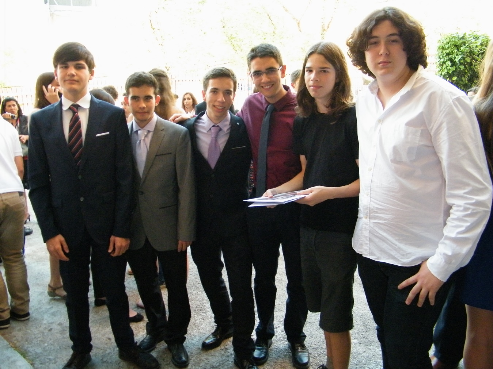
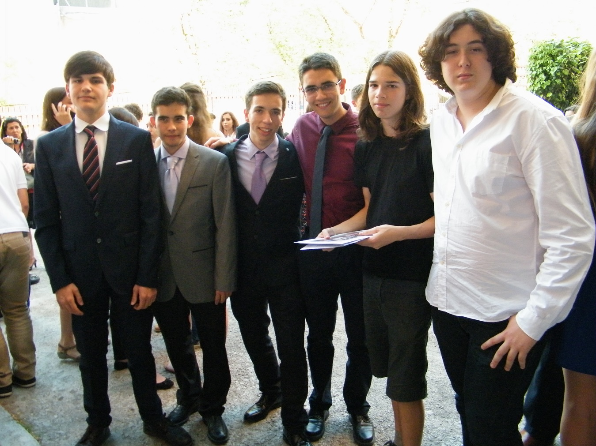

Sobre nosotros
Esta página está mantenida por varios individuos, instituciones y organizaciones no gubernamentales. Algunas de las más representativas son La Secta, Masterchem © y el corro de la patata.

Esta página está mantenida por varios individuos, instituciones y organizaciones no gubernamentales. Algunas de las más representativas son La Secta, Masterchem © y el corro de la patata.
